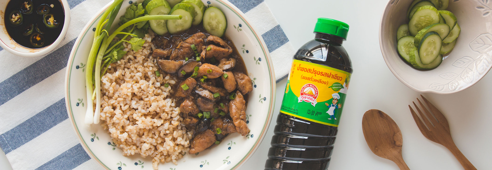

สูตรนี้เด็ดไม่แพ้ร้านดังๆ เลยทีเดียว เมนูข้าวหน้าไก่เป็นเมนูที่คนที่บ้านถามถึงบ่อยๆ เราเองก็ชอบ เพราะเป็นเมนูกลางๆ ที่ทุกคนในครอบครัวทานร่วมกันได้ ไม่ว่าจะไดเอทหรือไม่ แถมเป็นเมนูที่ให้สารหารครบถ้วน ทั้งโปรตีน คาร์โบไฮเดรต ไขมัน วิธีการทำไม่ยุ่งยากนัก เวลาทำทานเองก็สามารถเลือกวัตถุดิบได้ตามสไตล์ ทั้งปริมาณเนื้อไก่ จะเลือกใส่ส่วนที่ไขมันน้อยๆ ปริมาณโปรตีนไม่ต้องพูดถึงจุใจ เน้นๆ เต็มๆ เสิร์ฟกับข้าวที่ไม่ขัดสีกับผักสดๆ ว่าแล้วเอาสูตรไปลองทำกันได้เลย
นำสันในไก่มาหั่นเป็นชิ้นพอคำ จากนั้น นำพริกไทยดำคั่ว เม็ดผักชีคั่ว ขิง รากผักชี กระเทียม หอมแดง มาโขลกเข้าด้วยกัน นำเครื่องที่โขลกไว้ลงคลุกเคล้ากับสันในไก่ ปรุงรสด้วย ซอสปรุงรสฝาเขียว (ซอสถั่วเหลือง) ตราภูเขาทอง น้ำมันงา น้ำตาลทรายแดง เหล้าจีน ซีอิ้วดำเล็กน้อยเพื่อเพิ่มสีสัน หมักทิ้งไว้ในตู้เย็น 2-4 ชั่วโมง (เท่าที่ทำมาหมักค้างคืนยิ่งนุ่มยิ่งหอมอร่อย)
เมื่อครบเวลา นำกระทะมาตั้งไฟ ใส่น้ำมันรำข้าวเล็กน้อยพอเคลือบกระทะ นำไก่ที่หมักไว้ลงผัด คลุกเคล้าให้ไก่สุกเหลือง เติมเห็ดหอมสด ตามด้วยแป้งข้าวโพด คลุกเคล้าให้เข้ากัน จากนั้นเติมน้ำลงไป ชิมรสดู ถ้ารสอ่อนไปให้เติมรสชาติด้วย ซอสปรุงรสฝาเขียว (ซอสถั่วเหลือง) ตราภูเขาทอง ได้อีกเล็กน้อย คนเร็วๆ ดูว่าน้ำเริ่มข้นขึ้น จากนั้นลดไฟลง แล้วอุ่นต่อด้วยไฟอ่อนๆ ไปอีก 10 นาที (ระวังก้นจะไหม้ด้วย)
นำ น้ำตาลทรายแดง เกลือเล็กน้อย น้ำส้มสายชู และซีอิ้วดำ ผสมเข้าด้วยกัน ปรุงรสให้ได้รส เปรี้ยว หวาน เค็ม นำเข้าไมโครเวฟ อุ่นด้วยไฟอ่อนแค่ให้น้ำตาล และเกลือละลาย แล้วนำมาเติมพริกชี้ฟ้าเขียวที่หั่นไว้ ก็เป็นอันเสร็จพิธีการ พร้อมเสิร์ฟความอร่อยได้แล้ว
เวลาเสิร์ฟ เสิร์ฟน้ำหน้าไก่ ราดบนข้าวกล้องหอมมะลิหุงสุก เสริมข้างจานด้วย แตงกวา โรยหน้าด้วยต้นหอมซอย มีผักชี และ ต้นหอมสดแช่เย็นๆ ซักหน่อย ฮืมมมมม อิ่มจุใจกับปริมาณอกไก่ อร่อยแบบไม่ต้องไปกินร้านข้างนอกตามแยกไหนๆ เลย พลังงานต่อข้าวหน้าไก่ 1 จานตามสูตร อยู่ที่ 689 kcal ส่วนของซอสซีอิ้วพริกดองจะให้พลังงานอยู่ที่ 49.5 kcal ถึงพลังงานจะเยอะหน่อยแต่แน่นด้วยคุณภาพ และปริมาณแน่นอน
มหาวิทยาลัยขอนแก่น
Khon kaen University
เบอร์โทรศัพท์
043-009700
ที่อยู่
123 หมู่ 16 ถ.มิตรภาพ ต.ในเมือง อ.เมือง จ.ขอนแก่น 40002